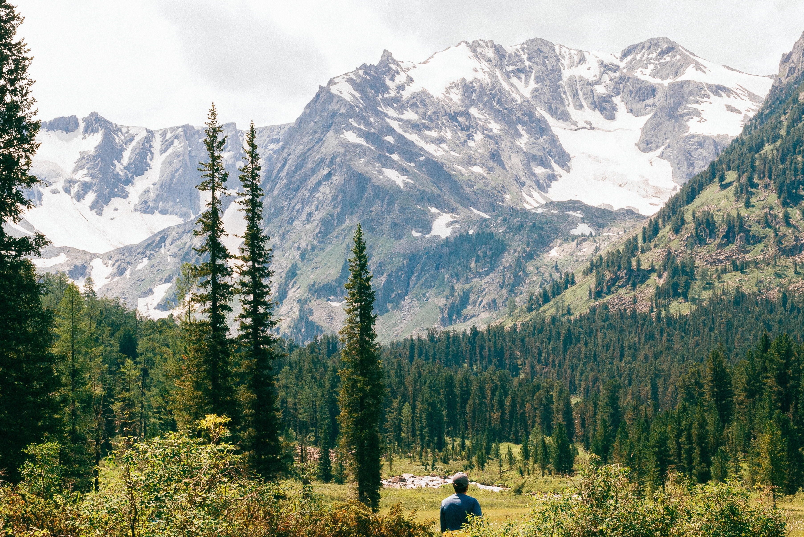
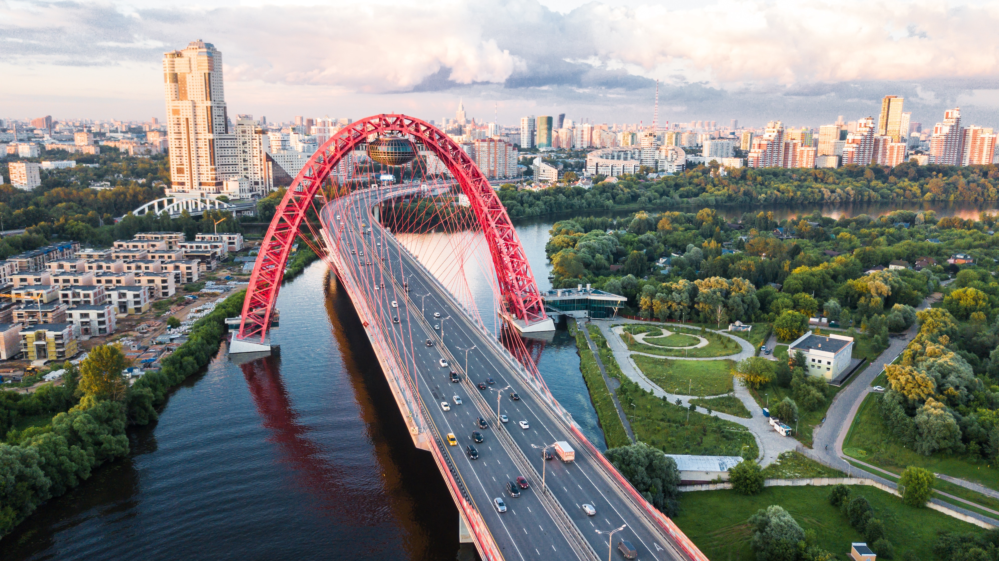

Travelling like Anna Karenina in old Russia and even sustainable - that's how it works!
Through many books and films our image of St. Petersburg, the second largest city in Russia, has been shaped. The city, which is also affectionately called Venice of the North, was the headquarter of the old tsars and has a lot more to offer besides numerous palaces and one of the largest art collections in the world. As stylish as the city itself, it can also be visited, and this in the long run.

Sank Petersburg is the cultural center of Russia
The former Leningrad was founded in 1703 by Peter the Great, who also gave the city its present name. He had the city built with the idea of providing access to the Baltic Sea. This explains the numerous bridges and canals that run through the city. Almost at every corner there are monuments, churches or palaces that tell the story of the city. The highlight for art lovers is undoubtedly the Hermitage Museum, which with its collection of over 3 million exhibits is one of the largest art museums in the world. Due to the splendour that is spread throughout the centre of the metropolis, Saint Petersburg can easily compete with cultural and historical places of pilgrimage such as Florence or Venice. If you don't want to miss this and also want to do something for your ecological footprint, the best way to travel is by train.
With the night train through the picturesque landscape of Eastern Europe
From Berlin you start with the Warsaw Express. As described in the previous blog, a ticket to Warsaw is available from about 30 EUR. Arriving in Warsaw, you board an unusual old Russian night train that takes you directly to another time. In this train there are numerous cabins with sleeping and living facilities in which tea is brewed in old Russian samovas and you can watch the passing landscape while having a chat. Via the Belarusian city of Brest you can reach Saint Petersburg in about 21 hours. Time seems to race by, because the train ride itself seems to be a special experience. A ticket for this route is available from about 50 EUR to about 100 EUR. The price depends on the time of your booking. The tickets can be booked easily via Polrail Service as well as Rail Russia.